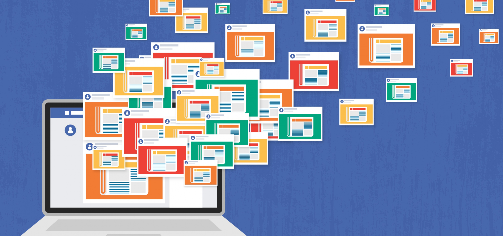

At this point, we are numb to fake news. You either understand it and immediately write off those click-bait sounding headlines, or you are a voracious consumer of it.
That wasn't always the case though. Back in the months and years leading up to November of 2016, consumers of the news and media were not as wary of the concept of fake news and it was harder to distinguish it from legitimate journalism. Four years later, it is fascinating to look back on the early years of what would become a well-oiled propaganda machine.
The 2016 US presidential election served as an opening act for the four years of lies and blatant partisanship that would echo around the country, a lot of which originated in the white house. Lets take a look at some of the numbers in regards to fake news output leading up to November 8, 2016.
Here are some visualizations of the number of articles being published on each of the eight days leading up to election day. The second graph shows the number of articles each day whose headlines contain the words "Hillary" or "Trump." We can see that as the election approaches and the overall number of articles goes down, mentions of "Trump" spike.
Check out the table below if you'd like to see some examples of typical fake news headlines. Note the click-baity titles, the capitalization of certain words, and the use of emphatic language uncharacteristic of traditional journalism.
| Date | Headline |
|---|---|
| Date | Headline |